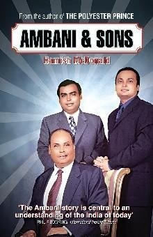
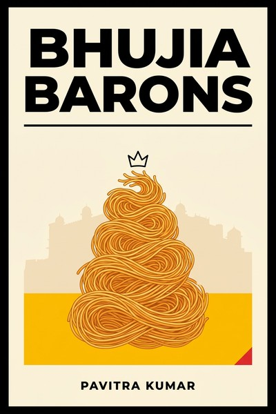
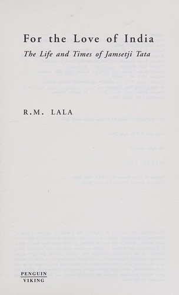
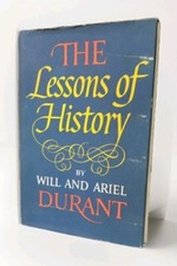
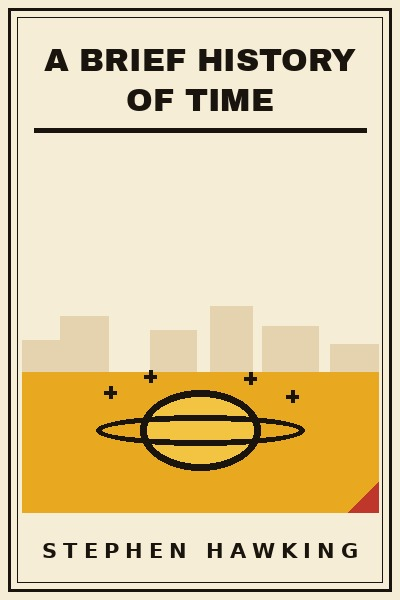
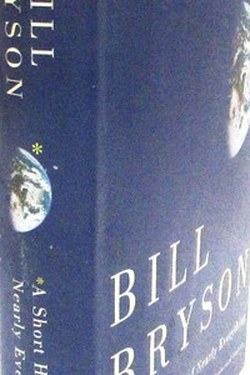
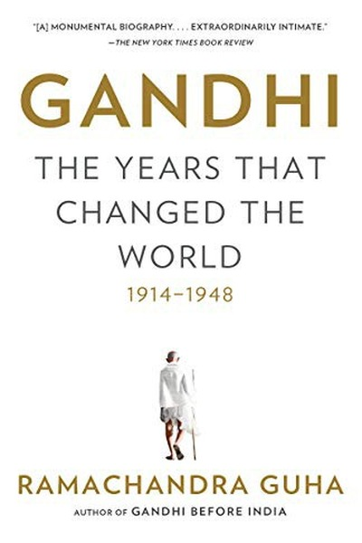

Library › Books like The Gene: An Intimate History
10 Books Like The Gene: An Intimate History That Hit the Same Nerve
You finished The Gene: An Intimate History by Siddhartha Mukherjee and want the same energy: A biography of the idea that explains heredity: from Mendel's monastery garden through eugenics' crimes to tod… Here are 10 more that scratch the same itch, each with a free chapter-by-chapter breakdown, key lessons and action steps on this shelf.
 The Silk Roads
World history is not the story of Greece, Rome and the West, it is the story of the roads through Central Asia, where goods, faiths, plagues and empires moved for three thousand years, and where the world's centre of gravity is returning.
READ THE FREE BREAKDOWN →
The Silk Roads
World history is not the story of Greece, Rome and the West, it is the story of the roads through Central Asia, where goods, faiths, plagues and empires moved for three thousand years, and where the world's centre of gravity is returning.
READ THE FREE BREAKDOWN →

Ambani & Sons The definitive business history of the Ambani family, showing how Dhirubhai built Reliance by mastering capital markets and politics, and why the 2005 split decided which son's strategy would survive. READ THE FREE BREAKDOWN →
Bhujia Barons: The Untold Story of How Haldiram Built a 5000-Crore Empire The Haldiram's story: a secret family recipe turned into India's biggest snacks business, and a masterclass in moats, family splits and patient expansion. READ THE FREE BREAKDOWN →
For the Love of India: The Life and Times of Jamsetji Tata The biography of Jamsetji Tata, the founder who planned a nation's industry a century ahead, and whose successors finished what he started because he built institutions, not just businesses. READ THE FREE BREAKDOWN →
The Lessons of History History does not repeat, but it rhymes - and its rhymes are the rules of human nature. READ THE FREE BREAKDOWN →
A Brief History of Time A guided tour of the universe's biggest questions: where did it come from, what are black holes, is time one-directional, and can physics ever know the mind of God, written so a curious non-scientist can actually follow. READ THE FREE BREAKDOWN →
A Short History of Nearly Everything Bryson tours everything we know and how we came to know it: the funniest introduction to science ever written. READ THE FREE BREAKDOWN →
Gandhi: The Years That Changed the World Moral authority, built daily through personal example, can move masses and empires more durably than any weapon. READ THE FREE BREAKDOWN → Guns, Germs, and Steel
Why did Eurasians conquer the Americas and not the reverse? Not biology or genius: the accident of geography gave some peoples domesticable plants and animals first, and with them, germs, technology and immunities that decided everything.
READ THE FREE BREAKDOWN →
Guns, Germs, and Steel
Why did Eurasians conquer the Americas and not the reverse? Not biology or genius: the accident of geography gave some peoples domesticable plants and animals first, and with them, germs, technology and immunities that decided everything.
READ THE FREE BREAKDOWN →
Every summary is free: lessons, examples, action steps, audio in your language.